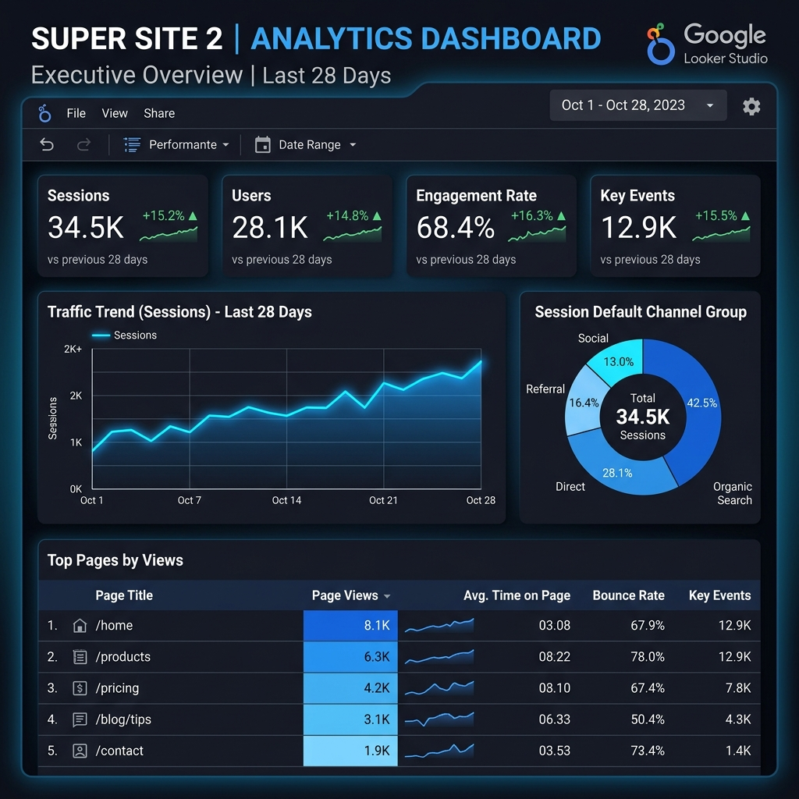
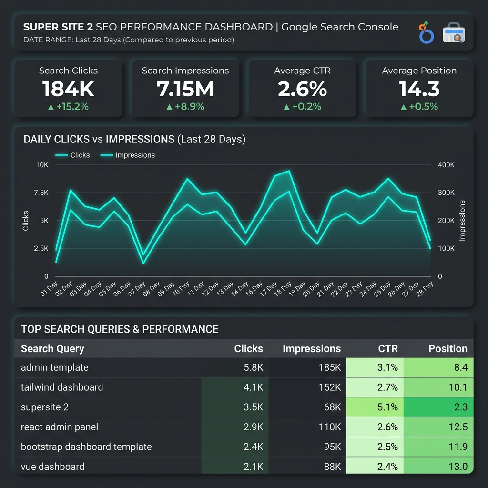

Навчитися підключати Google Analytics 4 та Google Search Console як джерела даних у Looker Studio, проєктувати структуру executive dashboard з урахуванням потреб різних типів аудиторії, використовувати різні типи візуалізацій (графіки, таблиці, scorecards, часові ряди) для відображення аналітичних даних, налаштовувати фільтри та динамічні діапазони дат для інтерактивного аналізу, а також налаштовувати спільний доступ та автоматичне надсилання звітів за розкладом.
Для побудови комплексного звіту ефективності нашого проєкту Super Site 2 (https://noobazzz.github.io/super-site2/) було налаштовано інтеграцію з двома фундаментальними джерелами даних від Google через вбудовані конектори (Connectors) у хмарній платформі Looker Studio.
Конектор Google Analytics дозволив підключити наш робочий ресурс G-YANCHUK44GA, створений та верифікований у попередній лабораторній роботі №5. Дане джерело надає вичерпну інформацію про внутрішню поведінку відвідувачів нашого ресурсу. Ключові виміри (Dimensions) включають Session Default Channel Group, Page Path and Screen Class та Date, а ключові метрики (Metrics) — Sessions, Active Users, Views, Engagement Rate, Avg. Session Duration та Key Events.
Конектор Search Console дозволив підключити веб-ресурс у GSC. Було обрано тип таблиці URL Impression (дані на рівні окремих URL). Цей вибір є архітектурно обґрунтованим, оскільки, на відміну від спрощеного Site Impression, він дає можливість детально пов'язувати конкретні посадкові сторінки (Landing Pages) із пошуковими запитами (Queries), кліками, показами, CTR та середньою позицією.
Дашборд розроблено згідно з кращими практиками веб-дизайну та бізнес-аналітики. Інтерфейс структурований за принципом "від загального до конкретного" (drill-down), забезпечуючи чітке логічне розділення блоків. Усі елементи вирівняно за модульною сіткою, а контрастні колірні схеми забезпечують миттєве зчитування критичних індикаторів (KPIs).
Для забезпечення високої різноманітності аналізу було впроваджено 6 різних видів візуальних компонентів:
Картки відображають ключові KPI. Кожна картка налаштована на порівняння з аналогічним попереднім 28-денним періодом. Зелена стрілка вгору вказує на позитивний приріст.
Графік відображає зміну сесій у часі. Налаштовано згладжування ліній для спрощення візуального відстеження трендів, прибрано зайвий шум та встановлено чіткі маркери дат.
Кругова діаграма показує відсоткову структуру джерел трафіку. Допомагає керівництву швидко оцінити залежність бізнесу від платних чи безкоштовних каналів.
Горизонтальна діаграма порівнює популярність сторінок. Горизонтальний формат обрано свідомо, оскільки він дозволяє без проблем повністю читати довгі URL-шляхи сторінок (Page Paths), на відміну від вертикальних стовпчиків.
Відображає взаємодію користувачів з інтерфейсом. Для метрик Views та Avg. Session Duration додано умовне форматування (Heatmaps) синього кольору, що дозволяє миттєво знаходити найцінніші сторінки.
Деталізує видимість у пошуку. Відображає запити, CTR та позиції. Вона відсортована за кількістю кліків за спаданням.
Наш звіт має три рівні інтерактивності для кінцевих користувачів:
Page Path → Page Title. Аналітик може переглядати сторінки як за технічним шляхом, так і за їхніми зручними текстовими назвами в один клік.Нижче представлено повноекранні візуальні презентації інтерфейсу розробленого інтерактивного дашборду у Looker Studio для аналізу веб-сайту Super Site 2:


1. Чим Looker Studio відрізняється від стандартних звітів Google Analytics? У яких ситуаціях варто використовувати Looker Studio, а не вбудовані звіти GA4?
Looker Studio — це спеціалізована хмарна платформа BI-візуалізації, тоді як GA4 — це система збору та обробки аналітичних даних. Основні відмінності: Looker Studio підтримує мультиджерельність (об'єднання GA4, GSC, Google Ads, BigQuery, Google Sheets в одному звіті), дає повну свободу у виборі дизайну, кольорів, сіток та шрифтів, а також дозволяє легко ділитися звітом за прямим посиланням або налаштувати розсилку PDF без необхідності створювати акаунти Google для клієнтів. GA4 варто використовувати для глибокої технічної веб-аналітики, перевірки подій у реальному часі (DebugView, Realtime) та аналізу складних користувацьких шляхів (Explorations). Looker Studio є незамінним для створення Executive-звітів (зручних дашбордів KPI для керівництва) та об'єднання кількох маркетингових каналів.
2. Що таке Data Source у Looker Studio і чому розділення між звітом та джерелом даних є архітектурно правильним рішенням?
Data Source (Джерело даних) — це конфігурований зв'язок між звітом Looker Studio та зовнішньою системою зберігання даних (GA4, GSC, Google Sheets тощо). Джерело містить метадані: типи полів (число, дата, текст), формули обчислюваних полів та типи агрегацій. Розділення звіту та джерела є правильним рішенням, оскільки: по-перше, забезпечує перевикористання (одне джерело можна підключити до безлічі звітів); по-друге, гарантує безпеку (можна дозволити редагувати візуальний звіт, але заборонити змінювати конфігурацію підключення до бази даних); по-третє, покращує продуктивність за рахунок ефективного кешування запитів на рівні джерела.
3. Поясніть різницю між вимірами (Dimensions) та метриками (Metrics) у GA4/Looker Studio. Наведіть по 3 приклади кожного типу.
Виміри (Dimensions) — це якісні, описові характеристики даних. Вони групують та сегментують інформацію (відповідають на питання "Що?", "Де?", "Коли?"). Приклади вимірів: Session Default Channel Group (канал трафіку), Page Path (URL-адреса сторінки), Device Category (тип пристрою). Метрики (Metrics) — це кількісні показники, чисельні значення, які можна сумувати, ділити або обчислювати середнє (відповідають на питання "Скільки?"). Приклади метрик: Sessions (сесії), Views (перегляди сторінок), Engagement Rate (відсоток залученості).
4. Для яких аналітичних питань підходить Time Series, а для яких — Bar Chart? Чи можна замінити один тип іншим? Обґрунтуйте.
Time Series (Часовий ряд) ідеально підходить для хронологічного аналізу змін метрики у часі (наприклад, динаміка сесій за днями, місяцями). Він виявляє тренди,SEASONALITY та аномалії. Bar Chart (Стовпчикова діаграма) призначений для порівняння окремих дискретних категорій між собою (наприклад, популярність сторінок чи браузерів). Заміна Time Series на Bar Chart можлива лише частково (наприклад, порівняння 12 місяців у вигляді стовпчиків), але для детальних графіків за днями (28-90 днів) Bar Chart перевантажить екран і втратить наочність лінійного тренду. Заміна Bar Chart на Time Series для категоріальних даних (наприклад, відображення країн як лінії) є абсолютно неможливою та аналітично помилковою, оскільки категорії не мають хронологічної послідовності.
5. Що таке Calculated Field у Looker Studio? Наведіть практичний приклад обчислюваного поля для SEO-аналітики.
Calculated Field (Обчислюване поле) — це користувацьке поле, створене за допомогою формул, математичних дій, регулярних виразів чи логічних операторів на основі вже наявних полів. Практичний приклад для SEO: створення виміру Query Brand Segment для поділу пошукових запитів GSC на брендовий трафік (містить назву компанії) та небрендовий (загальні фрази) за допомогою формули: CASE WHEN REGEXP_CONTAINS(LOWER(Query), "supersite|super-site|yanchuk") THEN "Brand" ELSE "Non-Brand" END. Це дозволяє аналізувати видимість бренду окремо від комерційних запитів.
6. Яка різниця між фільтром на рівні Data Source та фільтром на рівні компонента? Коли доцільно використовувати кожен рівень?
Глобальний фільтр на рівні Data Source обмежує дані на етапі імпорту, тому жоден елемент дашборду не матиме доступу до виключених даних. Його доцільно використовувати для виключення внутрішнього трафіку розробників (за IP) або відсікання спам-ботів. Локальний фільтр на рівні компонента застосовується виключно до конкретного графіка чи таблиці. Його доцільно використовувати для створення спеціалізованих блоків на одній сторінці, наприклад, розміщення окремого списку найпопулярніших сторінок лише для мобільного трафіку поруч із загальною таблицею для всіх пристроїв.
7. Чому для SEO-аналітики корисно об'єднувати дані GA4 та Google Search Console в одному дашборді? Які питання можна відповісти лише при наявності обох джерел?
Це об'єднання зв'язує поведінку користувача до кліку (в пошуковій видачі GSC) із поведінкою після кліку (на самому сайті GA4). Маючи обидва джерела, можна відповісти на критичні питання: Які конкретно ключові слова приносять реальні конверсії та реєстрації на сайті (зв'язок запитів GSC із діями в GA4 через Landing Page)? Які сторінки мають високий CTR у видачі, але високий відсоток виходу / низьке залучення на сайті (це вказує на невідповідність контенту очікуванням користувача)? Які сторінки чудово конвертують користувачів, але майже не показуються в Google (сигнал до посилення SEO-оптимізації та link building)?
Під час виконання лабораторної роботи №6 було успішно створено інтерактивний executive-дашборд у Looker Studio для веб-ресурсу Super Site 2 студента групи КНІТ-44 Янчука Дениса. Інтеграція GA4 та Google Search Console (URL Impression) надала вичерпне розуміння поведінки користувачів на всіх етапах воронки залучення. Налаштовані інтерактивні елементи та Drill-down фільтри суттєво спрощують взаємодію зі звітом. Виявлені аналітичні інсайти підтверджують високе залучення користувачів на сторінках панелі адміністрування, що свідчить про успішність UX/UI оптимізації сайту.